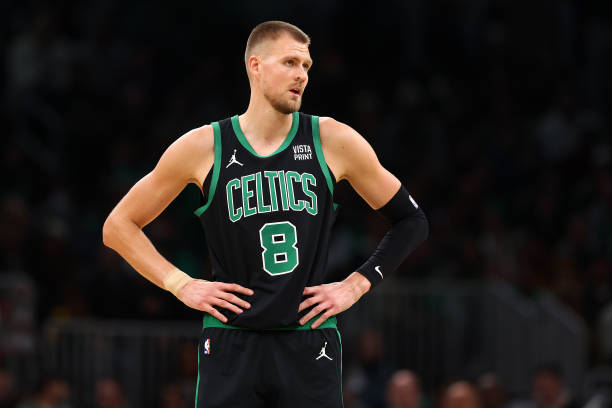
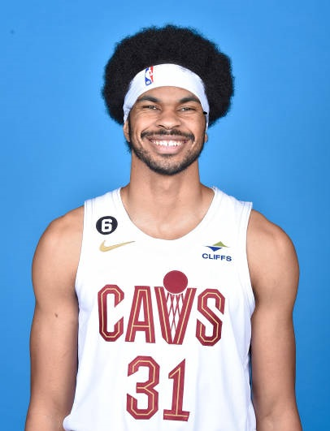
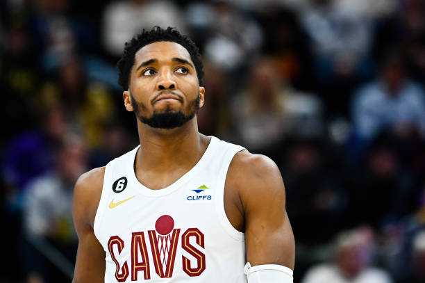
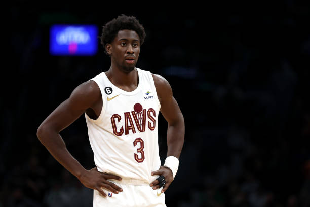

Here is a breakdown of our next game
Cleveland Cavaliers
The upcoming game between the Boston Celtics and the Cleveland Cavaliers promises to be intriguing, though both teams are contending with significant injuries and restrictions affecting key players. The Celtics will be missing Kristaps Porzingis, who has been ruled out due to a right soleus strain in his calf. For the Cavaliers, Jarrett Allen and Donovan Mitchell will both be on minutes restrictions, with Allen dealing with rib soreness and Mitchell experiencing calf tightness. Additionally, Caris LeVert has been ruled out with a knee injury.
Kristaps Porzingis' absence is a considerable setback for the Celtics. As a versatile big man, Porzingis offers both offensive firepower and defensive prowess. His ability to stretch the floor with his shooting and protect the rim on defense is integral to the Celtics' strategy. Without him, the Celtics will need to rely more heavily on other frontcourt players like Al Horford and Robert Williams III to step up both offensively and defensively. This increased reliance on Horford and Williams might also necessitate more small-ball lineups, putting additional pressure on Jayson Tatum and Jaylen Brown to carry the scoring and rebounding loads.
The Cavaliers, meanwhile, face their own challenges with key players under minutes restrictions and an outright absence. Jarrett Allen’s rib soreness limits his playing time, which affects the Cavaliers’ interior defense and rebounding. Allen is a critical anchor for the Cavs in the paint, and his reduced minutes mean that other big men like Evan Mobley will need to take on a greater role. Similarly, Donovan Mitchell's calf tightness means he won't be able to play his usual heavy minutes, potentially disrupting the Cavs' offensive rhythm and scoring capability. Mitchell is a dynamic scorer and playmaker, so his limited availability could hinder the Cavs' ability to maintain offensive consistency.
Caris LeVert's absence due to a knee injury further depletes the Cavaliers' roster depth. LeVert is a versatile wing who contributes on both ends of the floor. His absence will likely force the Cavs to dig deeper into their bench, possibly giving more minutes to players like Isaac Okoro and Cedi Osman, who will need to step up to fill the void. This lack of depth could be a critical factor, especially if the game remains close and requires sustained intensity from all active players.
In summary, the game will be a test of depth and adaptability for both teams. The Celtics will need to manage without their key big man, while the Cavaliers must navigate through the game with key players on limited minutes and without LeVert. The effectiveness of each team's secondary players and their ability to adjust to these constraints will likely determine the outcome of the matchup.
Injury Report - Boston Celtics
-  Kristaps Porzingis - Has been ruled out (Right soleus strain (calf))
Injury Report - Cleveland Cavaliers
-  Jarrett Allen - Minutes Restriction (Soreness of the ribs)
-  Donovan Mitchell - Minutes Restriction (Calf tightness)
-  Caris LeVert - Has been ruled out (knee)